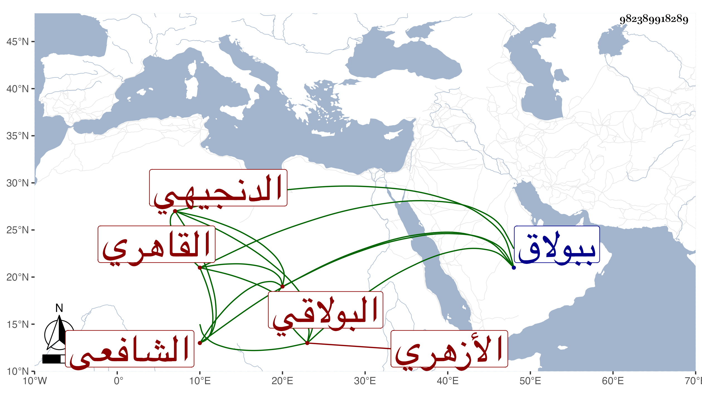

0902Sakhawi.DawLamic.ITO20230111-ara1.EIS1600.982389918289
Biography ID: 982389918289
914
عبد اللطيف بن عثمان بن سليمان الزين الدنجيهي ثم القاهري الأزهري البولاقي الشافعي اشتغل بالفرائض والحساب عند بلديه عبد القادر بن علي الماضي والشهاب السجيني ، وبرع فيهما وفي المخاصمات وصار يقوم بمهمات ما يحتاج إليه الأتابك من ذلك لأختصاصه بالزيني سالم وخدمته له بأقراء أولاده أولا ثم بغير ذلك وترقى وتمقته الملك لكثرة الملازمة فلم ينفك ، بل استرسل حتى استنزل محمد بن الشمس بن المرخم عن مشيخة الفخرية تصوفا وتدريسا وباشرهما والبدر بن الغرس عن مشيخة الزينية ببولاق ، وكاد أن يأخذ وظائف جامع ابن البازري بعد ولد النجم بن حجي ، وقرر في التصدير بالفرائض بالأزبكية إلى غيرها من الجهات ، ولم يحتمله ناظر الفخرية فتوسل حتى أرضوه ونزل عنها وهو ممن سافر ابن مخدومه في موسم سنة ثمان وتسعين ، وبلغني أنه التفت لمرافعة بني الزيني سالم عنده .
